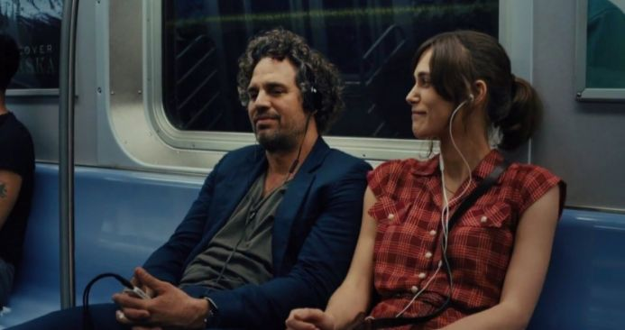

About Us
Vuoi saperne di più? Ecco da cosa è nato questo progetto.
Cos'è la musica per l'essere umano?
Il motivo più semplice per cui la maggior part delle persone ascolta musica è perché suscita emozioni. Per dirlo con le parole di John Solboda, uno psicologo cognitivista specializzato in studi sulla musica: "la Musica ha capacità di elevare il livello della nostra vita emotiva".
La musica non è fondamentale per la vita pratica dell’uomo, la sua assenza non causa danno alla salute come la mancanza di sonno; tuttavia, essa fa parte delle attività vitali, si tratta di un’espressione artistica che appartiene a tutte le culture a partire da circa 55.000 anni fa con la dispersione delle primissime comunità umane.
La musica non è solo composizione, elaborazione e fruizione, ma è anche comunicazione culturalmente e socialmente condivisa, qualunque sentimento essa possa o voglia esprimere.
Per citare uno dei tanti film sulla musica: "Una delle scene più banali all'istante viene investita di tanto significato! Tutte quelle banalità ad un tratto si trasformano in perle, una collana di perle preziose grazie alla musica" - Tutto può cambiare, 2014.
Dietro alle Playlist
"Realizzare una playlist è un'arte delicata, come scrivere una lettera d'amore, ma meglio - in un certo senso.
Puoi dire ciò che vorresti dire, senza dirlo effettivamente. Utilizzi la poesia di qualcun altro per esprimere quello che provi. Poi ci sono altre regole: deve intrattenere; deve raccontare una storia; non deve essere troppo ovvia, ma neanche troppo intricata; non ci devono essere troppe canzoni dello stesso artista - a meno che non sia il tema della compilation, ovviamente.
In ogni caso, una buona playlist - come moltissime altre faccende nella vita - è difficiele da realizzare".
Questo è uno dei discorsi sulla musica di Rob: proprietaria di un fatiscente negozio di dischi, collezionista, malata di musica e in enterna crisi amorosa. La protagonista è interpretata dall'attrice che recentemente ha indossato i panni di Catwoman nell'ulimo Batman uscito nel 2022: Zoe Kravitz, figlia di Lenny Kravitz un grande cantautore, polistrumentista, produttore discografico e attore statunitense.
Si tratta di una delle citazioni più significative sulla musica tratta dalla nuova serie Tv americana High Fidelity (Alta Fedeltà), ispirata dal libro Nick Horby del 1995. In questa, si percepisce perfettamente ciò che significa - per un appassionato - comporre una playlist e sopratutto perché non può essere un compito da affidare a dei semplici computer.
Com'è nata l'idea?
Con l'introduzione delle nuove tecnologie, la nostra generazione si è sempre più allontanata dal mercato musicale fisico di CD, vinili e cassette.
Nonostante la consistente crescita della vendita di album fisici a partire dal 2021 ( si calcola, ad esempio, un +51,3% di vendita di vinili rispetto il 2020), le piattaforme streaming rappresentano la principale fonte di diffusione di contenuti musicali: garantendo una costante fruizione, ovunque l'utente si trovi - purché dotato di connessione internet.
Si tratta di una via immediata ma che ha reso i ragazzi più pigri, dipendenti da algoritmi che spesso peccano di efficacia: "...l’algoritmo ha funzionato alla grande per il primo anno e mezzo permettendomi di crearmi playlist fenomenali, ma da qualche mese non mi propone più nessun brano che merita di essere salvato tra i “mi piace”..." scrive un utente iscritto a Spotify.
Proponiamo, dunque, un sito costruito intorno all'utente, playlist create in base ai gusti e all'atmosfera che ciascun utente desidera ascoltare senza l'ausilio di alcun "algoritmo intelligente", ma un team appassionato di musica che ascolterà e cercherà di soddisfare qualsiasi vostra richiesta!